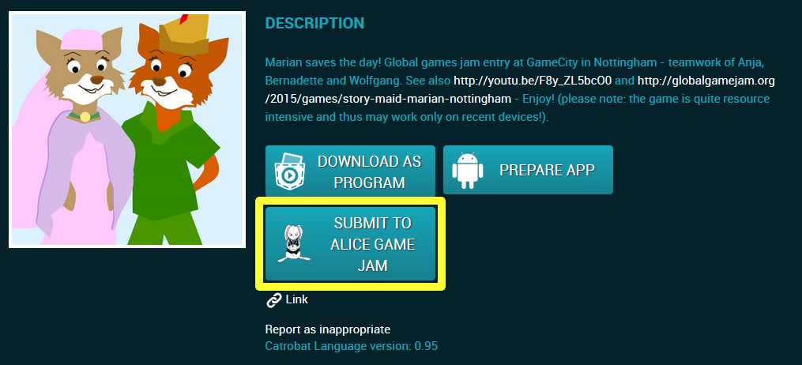

Explora virtualmente Alicia en el País de las Maravillas y sus amigos con Pocket Code y Scratch en el evento #AliceGameJam celebrado durante la Computer Science Education Week del 7 al 13 de Diciembre de 2015. Crea tu propio programa sobre Alicia y ten la oportunidad de ser parte de algo más grande.
Alicia en el País de las Maravillas de Lewis Carroll se publicó en el año 1865. Desde entonces, las aventuras de Alicia, el Conejo Blanco y el resto de fabulosos personajes del libro han fascinado a jóvenes y mayores durante 150 años. Ahora, del 7 al 13 de Diciembre de 2015, el evento Alice Game Jam te invita a recrear el espíritu de este mágico mundo mediante la creación de juegos divertidos sobre Alicia y sus amigos.
Alicia persigue a un conejo blanco dentro de su madriguera y llega a un mundo mágico, imaginativo y emocionante. Experimenta aventuras maravillosas y apasionantes en su viaje a través de este país de las maravillas, se encuentra con las nuevas y sorprendentes criaturas como el Sombrerero Loco o el Gato de Cheshire...

Con Pocket Code nuestro objetivo es incentivar a los adolescentes en la creación de sus propios juegos e historias interactivas directamente en sus smartphones sin tener conocimientos previos en programación “Estilo-Lego”. ¿Qué tema para nuestro primer Game Jam podría ser mejor que Alicia en el País de las Maravillas?
Puedes usar Scratch para crear tus propias historias, juegos y animaciones y compartirlos con otras personas de todo el mundo. Visita Alice in Wonderland Studio y explora ideas de proyectos, encuentra al Gato de Cheshire y otros personajes para mezclar y compartir.
Conéctate y da vida a Alicia en scratch.mit.edu.

El Game Jam se llevará a cabo durante la internacional Computer Science Education Week del 7 al 13 de Diciembre de 2015. Toda la información necesaria se publicará en esta web a lo largo de esta semana. ¡Así que estad atentos!
¡Todo es sobre Alicia en el País de las Maravillas! Crea tu propio juego y una historia sobre sus increíbles aventuras. No te olvides del Conejo Blanco, el Gato de Cheshire, el Sombrerero Loco y el resto de personajes pintorescos del libro. Más detalles sobre la temática disponibles antes del inicio del Jam.
Como un reto especial vamos a anunciar un "Tema sorpresa" relacionado con Alicia al inicio del Game Jam!
Puedes participar de manera individual o formar parte de un equipo de hasta cuatro personas. Como herramienta para crear tu juego puedes utilizar nuestra aplicación gratuita “Pocket Code” " o la plataforma web gratuita Scratch del MIT Media Lab.
Puedes encontrar más información en nuestra sección de Preguntas Frecuentes.
Todos los juegos, animaciones y cuentos presentados serán publicados en nuestro "Muro de la Fama”, durante y después del evento. ¡Tendrás la oportunidad de compartir tu proyecto con tus amigos, tu familia y nuestra comunidad! También habrá un sorteo en el que todos los participantes que presenten un programa con la temática de Alicia tienen la oportunidad de ganar grandes premios y regalos.


Decide si quieres trabajar solo o en equipo, ten en cuenta el tema sorpresa y los diversificadores que serán anunciados el 7 de Diciembre de 2015; sigue las reglas, y empieza a crear tu propio juego con Pocket Code o Scratch sobre “Alicia en el País de las Maravillas”.
Si no tienes ninguna experiencia programando no tengas miedo, ¡es más fácil de lo que crees! En la sección de tutoriales proporcionamos algunos ejemplos para principiantes y lecciones para aprender a programar. Además existen enormes comunidades sobre Pocket Code y Scratch que proporcionan ejemplos en la web.
Para hacértelo más fácil te vamos a proporcionar algunos recursos especiales que puedes usar durante el Game Jam. Para obtener más información sobre estos recursos gratuitos consulta nuestra sección de preguntas frecuentes FAQs.
Si quieres apoyarnos y ayudar a otros a aprender a programar, echa un vistazo a nuestra sección de preguntas frecuentes y encuentra más información aquí

Sube tu programa Pocket Code y rellena la descripción (¿sobre qué trata tu juego?). Incluye los siguientes dos hashtags en la descripción de tu juego:
Si aún no estás registrado, por favor inicia sesión haciendo click en el icono de tu perfil de usuario (resaltado en rojo).
Ahora estarás en tus programas. Aquí encontrarás un nuevo botón: “Submit To Alice Game Jam“.

Haciendo click sobre este botón se abrirá un cuestionario. Por favor complétalo. Sólo si completas tu juego presentado se mostrará en la siguiente página web (categoría: programas presentados):Wall of Fame
To submit your game please fill out the questionnaire that occurs. Then your program will be submitted and shown on our Wall of Fame!